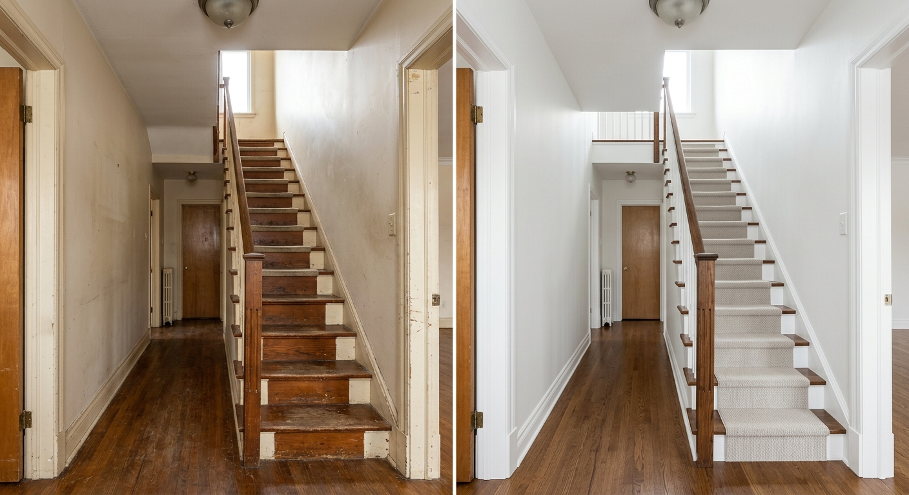

Pourquoi les prix varient?
Deux maisons de meme taille peuvent demander un temps different si les murs sont abimes, si les plafonds sont hauts ou si les moulures doivent etre peintes.
Le prix d'un peintre a Terrebonne depend moins d'un tarif magique que du temps reel de preparation et d'application. Cette page explique les facteurs qui influencent votre soumission et vous aide a comparer les offres correctement.

Reponse courte: pour savoir combien coute peinture maison Terrebonne, il faut evaluer les surfaces, les reparations, les plafonds, les moulures, les couleurs, l'acces et les produits. Une soumission gratuite avec photos donne le meilleur point de depart.
| Projet | Facteurs de cout | Conseil |
|---|---|---|
| Piece unique | Dimensions, plafond, trous, couleur actuelle | Envoyer photos et mesures approximatives |
| Maison complete | Nombre de pieces, moulures, portes, escaliers | Demander une evaluation detaillee |
| Exterieur | Grattage, hauteur, meteo, adhesion, bois expose | Planifier selon la saison |
| Armoires cuisine | Nombre de portes, degraissage, sablage, finition | Photos des caissons et tiroirs requises |
Deux maisons de meme taille peuvent demander un temps different si les murs sont abimes, si les plafonds sont hauts ou si les moulures doivent etre peintes.
Protection, preparation, couches prevues, produit, nettoyage et limites du projet devraient etre clairs dans la soumission.
Appelez ou envoyez photos, secteur et delais. Nous confirmerons les informations necessaires pour une estimation utile.
Une estimation claire commence par les bonnes informations. Contactez-nous maintenant.